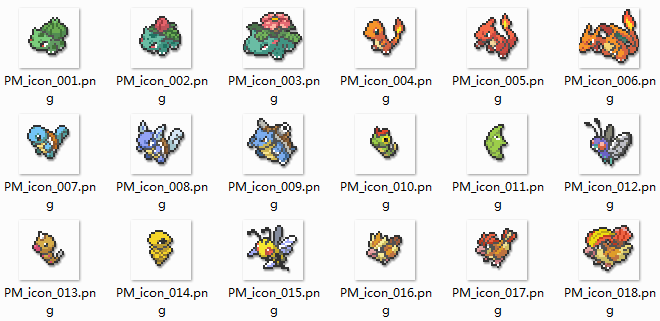
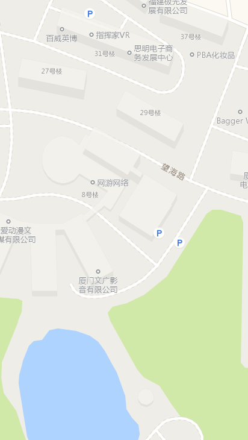
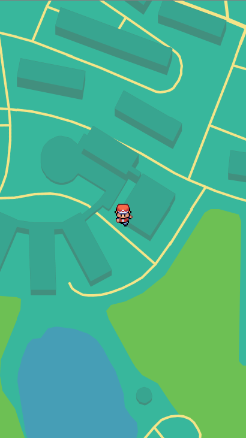
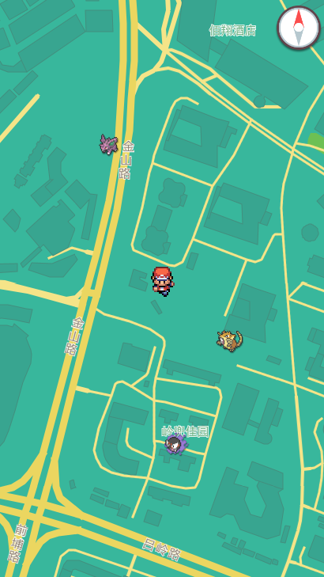
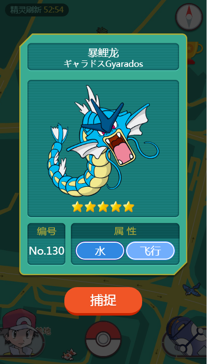
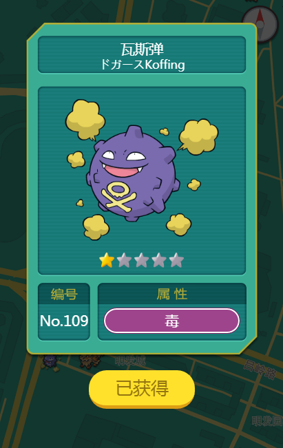
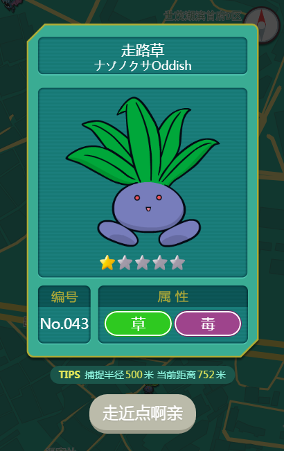
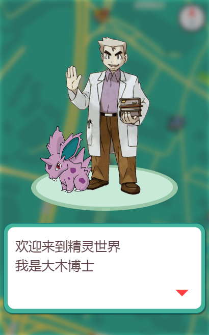
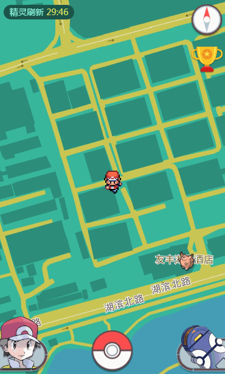

PokemonGo：LBS游戏开发
guowc
publish at
2017-08-08
去吧！皮卡丘！
- 前言
准备工作 一、确定功能需求 第一阶段 1、用户体系
第二阶段 1、地图增加道馆挑战
第三阶段 1、精灵交易
二、开放地图选择
功能 / 厂商
百度地图
腾讯地图
高德地图
自定义皮肤
支持
不支持
支持
实时定位
不支持
支持
支持
开发文档
差
一般
友好
对比三个地图厂商，我们选择高德地图进行二次开发
三、申请高德地图SDK 登录http://lbs.amap.com/
四、接入微信授权 具体参考微信公众平台开发者文档https://mp.weixin.qq.com/wiki?t=resource/res_main&id=mp1421140842
五、服务端接口 我们需要一些接口来保存用户数据，所以需要找一个服务端的同学配合完成几个简单的接口：
api/login 判断登录状态，获取用户基本信息api/getGlassPokemon 获取草地精灵api/getMyPokemon 获取背包精灵api/catchPokemon 捕捉精灵api/getRank 获取排行榜信息
六、素材准备 1、简单设计一下主界面 UI，确定每个功能布局，和地图的配色方案
2、准备150只精灵的素材图片（大小各一套）

现在开始 一、接入高德地图 在 <head></head> 中引入高德地图 js-sdk
1 2 3 <head > <script src ="http://webapi.amap.com/maps?v=1.3&key=464e2c3addc64c5894994afe0bbdca21" > </script > </head >
key的值为高德地图开发者中心创建应用后获得的key
在 html 中创建地图容器
在 js 中初始化地图
1 2 3 4 5 6 var gomap;gomap = new AMap.Map('gomap' , { zoomEnable : false , zoom:18 , center: [118.18088 , 24.4896 ], });
至此地图已经接入完成 查看DEMO

二、地图美化 默认的地图样式不能满足我们的需求，高德地图提供了地图皮肤编辑器：高德地图皮肤编辑器
在编辑器中修改道路，陆地，建筑，水域等颜色，同时在配置中修改每种标志物显示情况，简化地图。e6fa21422698f8a28585158d9d075f1d
1 2 3 4 5 6 const gomap = new AMap.Map('gomap' , { zoomEnable : false , zoom:18 , center: [118.18088 , 24.4896 ], mapStyle : 'amap://styles/e6fa21422698f8a28585158d9d075f1d' });
查看DEMO
这样看起来就有点游戏的样子了
三、地图定位 我们需要把地图和主角定位在当前位置，并且在移动时实时更新定位，这就需要借助 AMap 的 geolocation 插件
1 2 3 4 5 6 7 8 9 10 11 12 13 14 gomap.plugin('AMap.Geolocation' ,function ( var geo = new AMap.Geolocation({ showButton: false , showCircle: false , showMarker : true , markerOptions : { content : '<div class="Symbol hero"></div>' , } }); gomap.addControl(geo); geo.watchPosition(); AMap.event.addListener(geolocation, 'complete' , onComplete); AMap.event.addListener(geolocation, 'error' , onError); })

小智一个人站在地图上有点孤单，我们给他加一个光环放大的效果，看起来像是在发出检测信号：
1 2 3 4 5 6 7 8 9 10 11 12 13 14 15 16 17 18 19 .Symbol .hero :after { -webkit-animation :heroWave 2s ease infinite; background :rgba (255,255,181,0.1); content :'' ; width :100px ; height :100px ; display :block; position :absolute; left :-30px ; top :-30px ; border-radius :100% ; box-shadow :0 0 0 1px rgba (255,255,181,0.7); opacity :0.7 ; } @-webkit -keyframes heroWave{ 0%{ -webkit-transform :scale (0.2);opacity :0 } 50%{ opacity :1 } 100%{ -webkit-transform :scale (1);opacity :0 } }
查看DEMO
四、罗盘 有了定位，我们还需要知道自己移动的方向，方便接近目标，所以我们在界面右上角放置了一个虚拟罗盘
通过监听 HTML5 的 deviceorientation 获取指南针角度信息，改变罗盘旋转方向：
1 2 3 4 5 6 if (window .DeviceOrientationEvent) { window .addEventListener("deviceorientation" , function (event ) var dir = event.webkitCompassHeading; $("#J_pin" ).css("-webkit-transform" ,'rotate(' + (360 -dir) +'deg)' ); }, false ); }
查看DEMO (罗盘只在移动端生效，扫码查看)
五、精灵数据 由于精灵的编号，属性，星级等数据是固定的，我们需要在前端创建一个保存精灵图鉴数据的 JSON 文件，以减少服务端返回数据的复杂度，只需通过编号，在图鉴中索引对应精灵的相关数据：
1 2 3 4 5 6 7 8 9 10 11 12 13 14 15 16 17 18 19 20 21 22 23 24 25 26 27 28 29 30 31 32 33 34 35 36 37 38 39 var Pokedex = [ { 'number' :'001' , 'name' :'妙蛙种子' , 'name_jp' : 'フシギダネ' , 'name_en' : 'Bulbasaur' , 'properties' : ['草' ,'毒' ], 'star' : 4 , }, { 'number' :'002' , 'name' :'妙蛙草' , 'name_jp' : 'フシギソウ' , 'name_en' : 'Ivysaur' , 'properties' : ['草' ,'毒' ], 'star' : 4 , }, ... ]; var Pokedexcolor = { '草' : '#1ba50e,#2ec920' , '冰' : '#13c6db,#57e9ff' , '超能力' :'#dd045b,#f7478d' , '虫' : '#889610,#b5b214' , '地面' : '#af8a19,#d8b343' , '电' : '#b28200,#ffd621' , '毒' : '#752464,#9e448c' , '飞行' : '#4381ff,#72aefc' , '钢' : '#6d6d8a,#aaaabb' , '格斗' : '#902918,#bb5544' , '火' : '#c72500,#f05526' , '龙' : '#2b1aa6,#7766ee' , '水' : '#2b1aa6,#3088e1' , '岩石' : '#907d2f,#a89755' , '一般' : '#969685,#bbbbaa' , '幽灵' : '#3d3d7c,#5f52a7' , '妖精' : '#3d3d7c,#5f52a7' , }
编号001精灵对应的小图地址为 'images/pokemon/001.png'，大图地址为 'images/pokemon_big/001.png'
六、在地图上添加精灵 主角有了，但是地图空空如也，现在我们需要在主角周围生成一些随机的精灵，通过调用 getGlassPokemon 接口，传递当前位置坐标，服务端在坐标半径1公里内生成一定个数的精灵，前端通过返回的坐标和精灵编号将对应精灵添加到地图上。
由于后续接口需要验证微信授权信息，为了便于DEMO查看请先访问一次模拟登陆接口：http://www.guowc.cc/api/sysUser/login?openid=o3aw6v1QLA6R7B0w6vPBfL9Ti8Mw
getGlassPokemon 接口返回数据格式：
1 2 3 4 5 6 7 8 9 10 11 { data : { { id : 231 , number: "77" , lng : 118.094561807441 , lat : 24.4805797983452 , }, ... } }
首先在前面的geolocation插件中调用 getCurrentPosition() 方法，获取一次初始定位坐标，将坐标传给 getPokemons 接口拉取草地精灵数据：
1 2 3 4 5 6 7 8 9 10 11 12 13 var self = this gomap.plugin('AMap.Geolocation' ,function ( var geo = new AMap.Geolocation({ ... }); ... geo.getCurrentPosition(function ( status, result ) heroPoint.lng = result.position.lng; heroPoint.lat = result.position.lat; self.getPokemon(heroPoint) }); })
请求接口数据：
1 2 3 4 5 6 7 8 9 const getPokemon = function (point ) var self = this Method.fetch(Api.getGlassPokemons,{ lng :point.lng,lat :point.lat },function (data ) var res = data.data; for (var i = 0 ; i < res.length; i++){ self.addPokemon(res[i]); } }); },
Method.fetch为封装的ajax方法，只贴出关键流程代码，具体详见DEMO
获取到数据后，循环调用 addPokemon 方法，将精灵添加到地图上：
1 2 3 4 5 6 7 8 9 10 11 12 const addPokemon = function (data ) var pid = Method.getPid(data.number); var marker = new AMap.Marker({ map: Common.gomap, position: [data.position_x, data.position_y], icon: new AMap.Icon({ size: new AMap.Size(40 , 40 ), imageSize : new AMap.Size(40 , 40 ), image: "images/pokemon/PM_icon_" + pid +".png" , }), }); },
查看DEMO

现在我们就能在地图上看到精灵了～
七、获取背包精灵 这一步我们先把已捕捉到的精灵列表保存起来，以便后续使用：
1 2 3 4 5 6 7 const getMyPokemons = function ( Method.fetch(API.getMyPokemons,{},function (data ) for (var i = 0 ;i < data.data.length; i++){ State.bag.push(Method.getPid(data.data[i].number)); } }); }
八、精灵收集 操作优化 精灵收集是整个游戏的核心功能，原版pokemonGo精灵捕捉过程为AR实景捕捉形式，我们把精灵的捕捉形式简化了，保留街机时代的像素风格。最早在实现这个功能时，采用的策略是当玩家坐标与地图精灵小于一定距离时，自动进入精灵捕捉场景，这种方式存在几个问题：
用户位置发生变化时，需要不断计算用户坐标与地图上所有精灵的距离，计算量较大
可能存在同时与两个精灵距离符合捕捉条件，而一次只能捕捉一只精灵
用户如果不移动，基本很难捕捉到精灵
优化后将捕捉规则修改为：直接点击地图精灵即可捕捉，半径500米外提示用户需走进范围才能捕捉。优化后的方案降低了捕捉门槛，也鼓励用户走动去发现和捕捉更多精灵。
数据传递 上一步的 addPokemon 方法中，我们已经向地图中添加了精灵点标记（marker），但此时地图上的精灵唯一区分只是图片不同而已，我们还需为每个 marker 绑定对应的精灵信息，并为每个 marker 绑定点击事件，下面完善一下 addPokemon 方法：
1 2 3 4 5 6 7 8 9 10 11 12 13 14 15 16 17 18 19 20 21 22 const addPokemon = function (data ) var self = this ; var nid = parseInt (data.number); var pid = Method.getPid(data.number); var id = data.id; var marker = new AMap.Marker({ map: Common.gomap, position: [data.position_x, data.position_y], icon: new AMap.Icon({ size: new AMap.Size(40 , 40 ), imageSize : new AMap.Size(40 , 40 ), image: "images/pokemon/PM_icon_" + pid +".png" , }), extData : { nid : nid, id : id, } }); marker.on('click' ,function (e ) self.clickPokemon(e) }) },
由于地图上显示精灵图标过小，无法展示更多信息，所以我们在点击精灵后，没有直接进入战斗，先弹出对应精灵的卡牌：
1 2 3 4 5 function clickPokemon (e ) var self = this ; var data = e.target.getExtData(); self.initPokecard(data.nid,e.target); },
初始化卡牌弹窗：
1 2 3 4 5 6 7 8 9 10 11 12 13 14 15 16 17 18 19 20 <div class ="Modal pokedex" id ="js-modal-pokedex" > <div class ="card" > <div class ="namebox" > <p class ="name_cn" > </p > <p class ="name_jp" > </p > </div > <div class ="pokebox" > <img class ="pokeimg" src ="" alt ="" > <div class ="Widget stars" > <div class ="star" > </div > </div > </div > <div class ="propbox" > <div class ="num" > </div > <div class ="prop" > </div > </div > <p class ="Widget timer tips" > <b class ="t" > TIPS </b > 捕捉半径<span class ="t" > 500</span > 米 当前距离<span class ="t dist" > 0</span > 米</p > <span id ="js-btn-catch" class ="catchbtn" > 捕捉</span > </div > </div >
1 2 3 4 5 6 7 8 9 10 11 12 13 14 15 16 17 18 19 20 21 22 23 24 25 const initPokecard = function (nid, target ) var $card = Element.$pokedex， $catch = Element.$catch ; var data = Pokedex[nid - 1 ]; var props = '' , dist = 0 ; var imgUrl = 'images/pokemon_big/PM_animation_' + data.number +'.png' ; for (var i = 0 ; i< data.properties.length; i++){ var color = Pokedexcolor[data.properties[i]].split(',' ); props += '<div class="item" style="background:' + color[1 ] +';border-color:' + color[0 ] +'">' + data.properties[i] +'</div>' ; } $card.find('.name_cn' ).text(data.name); $card.find('.name_jp' ).text(data.name_jp + data.name_en); $card.find('.star' )[0 ].className = 'star star_' + data.star; $card.find('.num' ).text('No.' + data.number); $card.find('.prop' ).html(props); $card.find('.pokebox' ).removeClass('loaded' ); Method.loadImg(imgUrl, function ( $card.find('.pokeimg' ).attr('src' ,imgUrl); $card.find('.pokebox' ).addClass('loaded' ); }); $card.addClass('show' ); }
到这里就完成了精灵卡片的初始化（背包图鉴点击精灵小图共用这个弹窗），然而卡片只带有固定数据，需要跟单纯的图鉴查看器做区分，我们在卡片下方加上操作区，操作区有3种状态：精灵可捕捉，精灵已获得，精灵超出捕捉半径

1 2 3 4 5 6 7 8 9 10 11 12 13 14 15 16 17 18 19 20 21 22 23 24 25 26 27 28 29 30 const initPokecard = function (nid, target ) ... if (target) { var pa = target.getPosition(), pb = [State.heroPoint.lng,State.heroPoint.lat]; var dist = parseInt (pa.distance(pb)); $card.addClass('catch' ); $card.off().on('touchend' ,function (e ) $(this ).removeClass('show' ); e.preventDefault(); }) if ( dist < 500 ) { $card.find('.tips' ).hide(); if (State.bag.indexOf(data.number) != -1 ){ $catch .removeClass().addClass('ownbtn' ).text('已获得' ); }else { $catch .removeClass().addClass('catchbtn' ).text('捕捉' ); } }else { $card.find('.dist' ).text(dist); $card.find('.tips' ).show(); $catch .removeClass().addClass('overbtn' ).text('走近点啊亲' ); } }else { $card.removeClass('catch' ); $card.find('.tips' ).hide(); } }


查看DEMO
九、精灵捕捉场景 首先为卡片下方的捕捉按钮绑定事件，将点击的精灵数据传递到 meetPokemon 方法中（初始化精灵捕捉场景方法）：
1 2 3 4 5 6 7 8 9 10 11 12 13 14 15 16 17 18 const initPokecard = function (nid, target ) ... if (target) { var ext = target.getExtData() $catch .off(); ... if ( dist < 500 ){ if (State.bag.indexOf('data.number' ) != -1 ){ ... }else { $catch .on('touchend' , self.meetPokemon(ext.nid,ext.id)); target.setMap(null ); } } }else { } }
然后初始化捕捉场景：
1 2 3 4 5 6 7 const meetPokemon = function (nid,id ) Element.$modal.removeClass('show' ); Element.$body.addClass('State catching' ); Element.$catchBox.find('.texture' ).attr('src' ,'images/pokemon_big/PM_animation_' + Pokedex[nid].number + '.png' ); Element.$catchBox.find('.pname' ).text(Pokedex[nid].name); Element.$catchBox.find('.star' )[0 ].className = 'star star_' + Pokedex[nid].star; },
查看DEMO
十、去吧精灵球！ 现在点击丢出精灵球开始捕捉精灵，首先在 meetPokemon 中绑定精灵球的点击事件：
1 2 3 4 5 6 const meetPokemon = function (nid,id ) ... Element.$catchBox.find('.ballbox' ).off().on('touchend' ,function ( self.catchPokemon(nid,id) }) },
接下来实现 catchPokemon 方法：
1 2 3 4 5 6 7 8 9 10 11 12 13 14 15 16 17 18 19 20 21 22 23 24 25 26 27 28 29 30 31 32 33 34 35 36 37 38 39 40 41 42 const catchPokemon = function (nid,id ) var self = this ; var name = Pokedex[nid].name, pid = Pokedex[nid].number, star = Pokedex[nid].star, rate = 0.8 - star / 10 ; if (State.catching) return ; if (Method.random(rate)){ Element.$catchBox.addClass('catchwin' ); Method.fetch(API.catchPokemon,{ id : id },function ( console .log('捕捉成功！' ) }); setTimeout(function ( self.awardBox('images/pokemon_big/PM_animation_' + pid + '.png' ,name,function ( $body.removeClass(); Element.$catchBox.removeClass('catchwin' ); State.catching = false ; }); },3200 ); }else { Element.$catchBox.addClass('catchfail' ); Method.fetch(API.catchPokemon,{ id : id , flag : true },function ( console .log('捕捉失败！' ) }); setTimeout(function ( self.alertBox(name + ' 逃跑了!' ,function ( Element.$body.removeClass(); Element.$catchBox.removeClass('catchfail' ); State.catching = false ; }); },1500 ); } State.catching = true ; },
捕捉成功与失败：
1 2 3 4 5 6 7 8 9 10 11 12 13 14 15 16 17 18 19 const awardBox = function (img,name,callback ) var cbk = callback || function ( Element.$award.addClass('show' ); Element.$award.find('.img' ).attr('src' ,img); Element.$award.find('.pname' ).text(name); Element.$award.find('.confirm' ).off().on('tap' ,function ( Element.$award.removeClass('show' ); cbk(); }); }, const alertBox = function (title,callback ) var cbk = callback || function ( Element.$alert.addClass('show' ); Element.$alert.find('.heading' ).text(title); Element.$alert.find('.confirm' ).off().on('tap' ,function ( Element.$alert.removeClass('show' ); cbk(); }); },
捕捉失败过程：
捕捉成功过程：
查看DEMO
十一、大木博士 在大木博士的实验室，小智得到了第一个精灵伙伴，那里是梦开始的地方。为了还原经典，我们加入一个简单的新手引导，通过与大木博士的对话，确定用户的性别，第一个伙伴，和简单的游戏玩法介绍。

首先实现一个简单的打字效果：
1 2 3 4 5 6 7 8 9 10 11 12 13 14 15 16 17 18 19 20 21 22 23 24 25 26 27 typing(char,delay) { var chars = char.split('' ); var index = 0 , delay = 0 ; Element.$typeText.html('' ); Element.$typeNext.hide(); State.typeOver = false ; var timer = setInterval(function ( if (delay == delay){ if (index == chars.length){ clearInterval(timer); State.typeOver = true ; Element.$typeNext.show(); return ; } if (chars[index] == '/' ){ Element.$typeText.append('<br>' ); }else { Element.$typeText.append(chars[index]); } index ++; }else { delay ++ ; } },50 ); },
然后初始化新手引导：
1 2 3 4 5 6 7 8 9 10 11 12 13 14 15 16 17 18 19 20 21 22 23 24 25 26 27 28 29 30 31 32 33 34 35 36 37 38 39 40 41 42 43 44 45 46 47 48 49 50 51 52 53 54 55 const initGuide = function ( var self = this ; var sex = 1 , pokenum = '001' , typeIndex = 0 ; Method.typing('欢迎来到精灵世界/我是大木博士' ,10 ); Element.$modal.removeClass('show' ); Element.$modalGuide.addClass('show' ); Element.$body.addClass('blur' ); Element.$typeBox.bind('tap' ,function ( if (!State.typeOver) return ; typeIndex ++; switch (typeIndex) { case 1 : Method.typing('这个世界到处都有精灵的存在/许多人把精灵当做伙伴' ,0 ); break ; case 2 : Method.typing('那么你是男孩还是女孩？/(选择角色)' ,0 ); Element.$modalGuide.addClass('setrole' ); Element.$setRole.bind('tap' ,function ( $(this ).addClass('selected' ).siblings().removeClass('selected' ); sex = $(this ).data('sex' ); }); break ; case 3 : Method.typing('选择一只精灵作为你的伙伴吧/(选择精灵)' ,0 ); Element.$modalGuide.removeClass('setrole' ).addClass('setpoke' ); Element.$setPoke.bind('tap' ,function ( $(this ).addClass('selected' ).siblings().removeClass('selected' ); pokenum = $(this ).data('number' ); Element.$setFigure[0 ].className = 'img-' + pokenum; }); Method.setItem('sex' ,sex); break ; case 4 : Method.typing('点击周围的小精灵即可抓捕!/(操作方式)' ,0 ); Element.$modalGuide.removeClass('setpoke' ); break ; case 5 : Method.typing('移动可能遇到随机出现的稀有精灵哦!/(随机事件)' ,0 ); break ; case 6 : Method.typing('请带上你的伙伴去冒险吧!' ,0 ); break ; case 7 : Element.$modalGuide.removeClass('show' ); Element.$body.removeClass('blur' ); self.ready(); break ; default : } }); },
查看DEMO
十二、完善更多 最后把界面上的一些数据展示的功能补上：
Loading
精灵刷新倒计时
系统公告
Toast提示
训练师信息
精灵背包
精灵图鉴
精灵大师榜 
最后附上完整版地址：